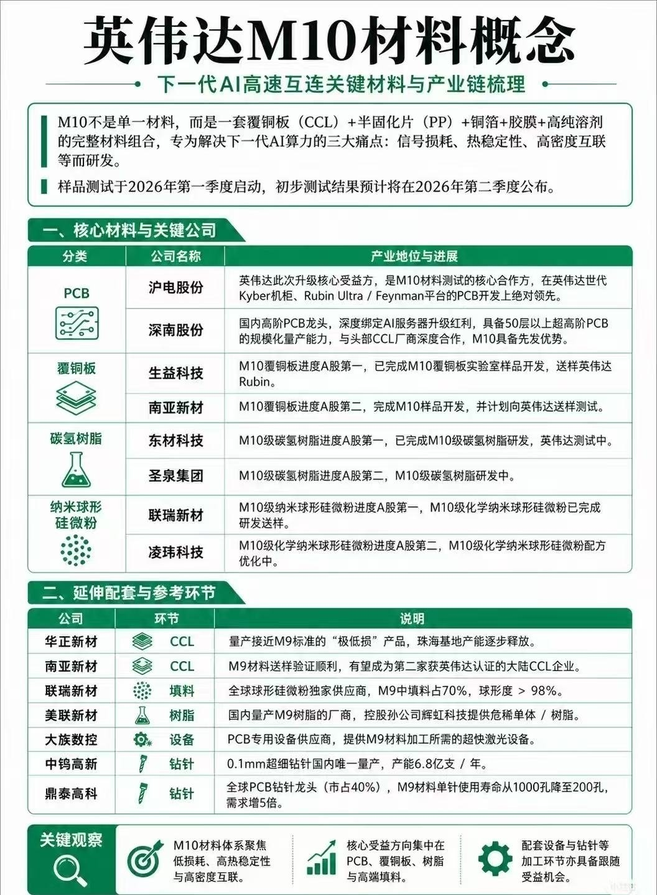

HTML REPORT •
英偉達 M10 材料概念：AI 高速互連的材料鏈判讀
M10 的重點在於一組圍繞 AI 高速 PCB 的低損耗、高熱穩定與高密度互連材料組合；投資判讀要從「誰卡在認證、量產、設備與耗材」切入。
一句話結論
如果 M10 確實是英偉達下一代 AI 高速互連平台的材料組合，受益順序會先集中在核心 PCB、覆銅板與樹脂體系，再延伸到填料、鑽針與雷射加工設備；但目前來源仍屬社群整理，關鍵公司認證與實際採用節奏需要後續公告或供應鏈交叉驗證。
M10 是什麼
來源圖將 M10 定義為一套完整材料組合，包含覆銅板（Copper Clad Laminate, CCL）、半固化片（Prepreg, PP）、銅箔、膠膜與高純度溶劑，目標是解決下一代 AI 算力平台的三個痛點：訊號損耗、熱穩定性與高密度互連。
工程上，這類材料升級通常屬於系統性調整，基板介電特性、樹脂配方、填料分散、銅箔粗糙度、鑽孔精度與壓合良率都會一起被檢視。也因此，真正有價值的公司不能只看材料名稱，還要看是否進入樣品測試、客戶認證與量產供應。
痛點對應材料層
材料鏈拆解
CCL
決定介電損耗、熱穩定與層壓可靠度。
PP
影響多層板壓合、流膠、厚度控制與良率。
銅箔
高頻下銅箔粗糙度會影響插入損耗。
樹脂／填料
控制低損耗、CTE、吸水率與耐熱性。
鑽針／設備
高密度互連放大鑽孔與雷射加工需求。
來源圖提到的公司與環節
以下為來源圖主張的產業位置整理，尚未等同於正式供應鏈認證。
| 環節 | 公司 | 來源圖主張 | 判讀 |
|---|---|---|---|
| PCB | 滬電股份 | M10 材料測試核心合作方，英偉達世代 Kyber 機櫃、Rubin Ultra / Feynman 平台 PCB 開發領先。 | 若屬實，位置最接近終端平台導入，但需確認客戶認證與量產節奏。 |
| PCB | 深南股份 | 高階 PCB 龍頭，深度綁定 AI 伺服器升級紅利，具備 50 層以上超高階 PCB 規模化量產能力。 | 受益邏輯在高層數與高頻高速板，但 M10 直接關聯需驗證。 |
| 覆銅板 | 生益科技 | M10 覆銅板進度 A 股第一，已完成實驗室樣品開發並送樣英偉達 Rubin。 | 核心材料位置明確，重點看送樣後可靠度與量產穩定性。 |
| 覆銅板 | 南亞新材 | M10 覆銅板進度 A 股第二，完成樣品開發，計畫向英偉達送樣測試。 | 屬候選供應商敘事，需看是否從送樣進入正式認證。 |
| 碳氫樹脂 | 東材科技 | M10 級碳氫樹脂進度 A 股第一，已完成研發，英偉達測試中。 | 樹脂是低損耗與耐熱性的底層槓桿，但客戶測試不等於量產採購。 |
| 碳氫樹脂 | 聖泉集團 | M10 級碳氫樹脂進度 A 股第二，M10 級碳氫樹脂研發中。 | 仍偏早期研發階段，投資確定性低於已送樣或測試中標的。 |
| 納米球形矽微粉 | 聯瑞新材 | M10 級化學納米球形矽微粉進度 A 股第一，已完成研發送樣。 | 填料會影響介電、熱膨脹與加工性，是材料配方中的關鍵支點。 |
| 納米球形矽微粉 | 凌瑋科技 | M10 級化學納米球形矽微粉進度 A 股第二，配方優化中。 | 屬上游材料優化環節，量產價值取決於規格穩定與客戶導入。 |
| 延伸配套 | 華正新材、南亞新材、聯瑞新材、美聯新材、大族數控、中鈞高新、鼎泰高科 | 分別對應 CCL、填料、樹脂、設備與鑽針等環節。 | 延伸鏈的彈性通常晚於核心材料，但若 M10 導入擴大，加工設備與耗材會有跟隨機會。 |
觀察重點
1. 從送樣到認證
最重要的驗證點在「完成樣品」之後，是否通過客戶可靠度、熱循環、訊號完整性與量產良率驗證。
2. 從材料到板廠
AI PCB 材料升級需要 CCL、PP、銅箔、填料與板廠製程共同調整，單一材料廠不一定能獨享紅利。
3. 從 M9 到 M10
來源圖把部分公司放在接近 M9 或 M10 的延伸鏈，代表要分清「既有高速材料受益」與「新規格直接導入」。
風險與盲點
- 來源驗證風險：目前資訊來自社群貼文與圖卡，尚未看到英偉達或相關公司正式公告。
- 命名風險：M10 可能是市場整理用語或供應鏈內部稱呼，不一定是英偉達公開規格名稱。
- 導入時程風險：樣品測試、初步結果、正式認證與量產採購之間可能相隔數季以上。
- 估值風險：材料鏈題材容易提前反映在股價，若後續沒有訂單或財報驗證，波動會很大。
來源
X 貼文：STOCK調研公社 @STOCK6688，2026-05-26 10:21 UTC
來源限制：本報告依公開貼文與附圖整理，未將圖中公司與英偉達供應關係視為已確認事實。文中「來源圖主張」均需等待公司公告、財報會議、客戶認證或多方供應鏈資訊驗證。
